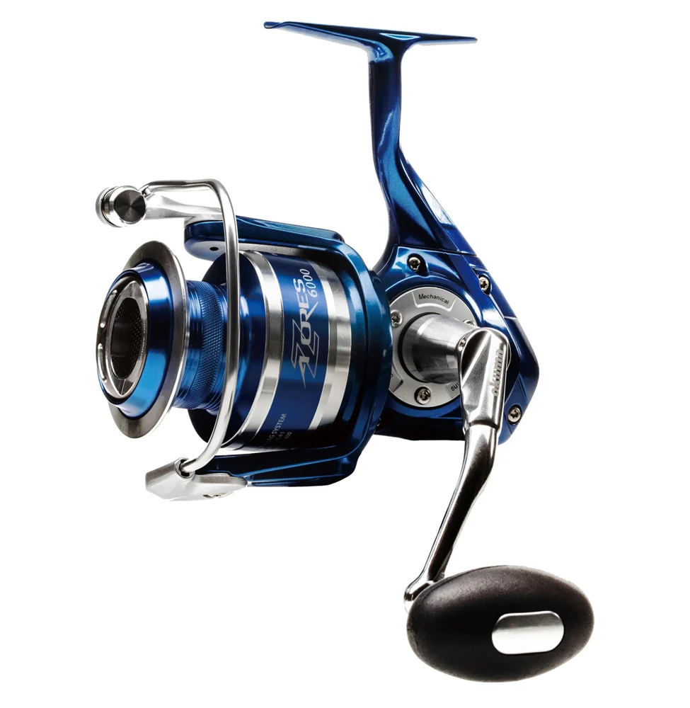

ReelCalc Reel Setup Guide
Okuma Azores Blue 6000 Line Capacity & Reel Setup Guide
The Okuma Azores Blue 6000 (Z-6000H-BLUE) is a 6000-size spinning reel. It weighs 18.5 oz, brings in 41.2 inches of line with each handle turn, and has a listed maximum drag of 29 lb. For surf or pier fishing, allow enough line for your cast with some left for a fish's run before deciding how much backing to use.